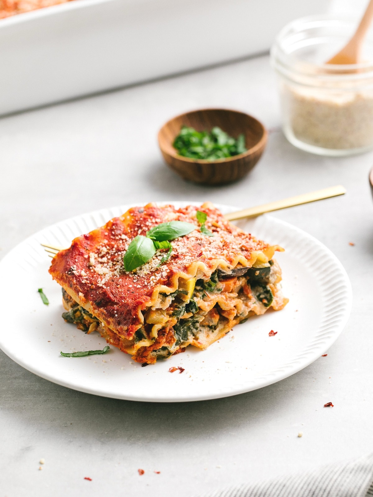

Plant-Based Lasagna

Ingredients:
- 1 package of lasagna noodles
- 1 jar of vegan marinara sauce
- 1 package of firm tofu
- 2 cups of chopped spinach
- 1/2 cup of chopped fresh basil
- 1/2 cup of nutritional yeast
- 1/2 cup of raw cashews
- 1 tablespoon of lemon juice
- 2 cloves of garlic, minced
- Salt and pepper to taste
- 2 cups of vegan mozzarella cheese
Instructions:
- Preheat your oven to 375°F (190°C).
- Cook the lasagna noodles according to the package instructions. Once they are cooked, rinse them under cold water to stop the cooking process.
- In a blender or food processor, combine the tofu, chopped spinach, basil, nutritional yeast, cashews, lemon juice, garlic, salt, and pepper. Blend until smooth and creamy.
- Spread a thin layer of marinara sauce in the bottom of a 9x13 inch baking dish. Place a layer of cooked lasagna noodles on top of the sauce, then spread a layer of the tofu and spinach mixture on top of the noodles. Repeat these layers until all of the noodles and tofu mixture are used up, making sure to end with a layer of marinara sauce.
- Sprinkle the vegan mozzarella cheese on top of the lasagna.
- Cover the baking dish with aluminum foil and bake for 30 minutes. Then, remove the foil and bake for an additional 10-15 minutes or until the cheese is melted and bubbly.
- Let the lasagna cool for a few minutes before serving.
Enjoy your delicious Whole Food Plant-Based Lasagna!
Back to Home